Bienvenidos a Jurassic Park San Diego
Jurassic Park San Diego es un impresionante parque temático ubicado en la vibrante ciudad de San Diego, California. Este parque, parte de la icónica franquicia Jurassic Park, ofrece a los visitantes la oportunidad única de experimentar la emoción de ver dinosaurios vivos recreados mediante avanzada ingeniería genética. Jurassic Park San Diego, donde la historia cobra vida y la aventura está garantizada. Además de nuestras emocionantes atracciones con dinosaurios, ofrecemos una variedad de servicios de primera calidad para asegurar que tu visita sea cómoda y memorable. Aquí te presentamos los servicios que encontrarás durante tu estancia:
Jurassic Cafe
En el Jurassic Cafe, ofrecemos una experiencia gastronómica única con un menú que deleitará a todos los paladares. Aquí puedes disfrutar de:
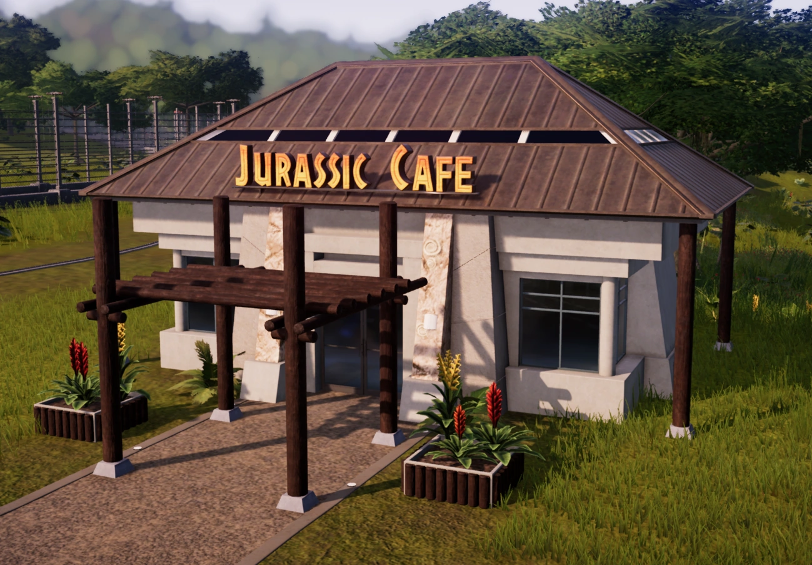Jurassic Cafe
Dino Discovery Museum
El Dino Discovery Museum es un espacio interactivo donde los visitantes pueden aprender sobre la historia de los dinosaurios y la ciencia detrás de su clonación. Exhibiciones incluyen fósiles auténticos, esqueletos a tamaño real, y estaciones interactivas donde puedes explorar cómo vivían estos magníficos seres.
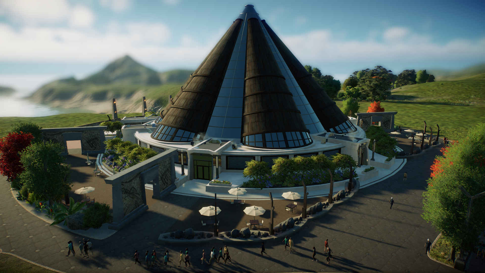Pterosauria The Imax Experience
El Pterosauria es un moderno cine 4D donde se proyectan documentales y películas sobre la era de los dinosaurios y la historia de Jurassic Park. Con efectos especiales como viento, agua y movimiento, el cine 4D proporciona una experiencia inmersiva que te hará sentir como si estuvieras en medio de la acción.
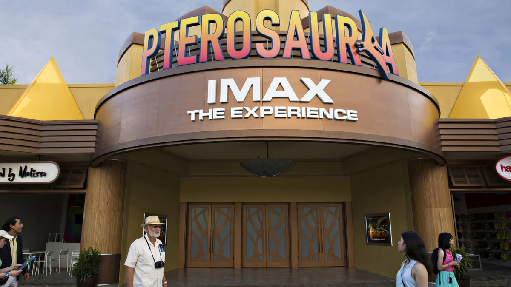Jurassic Gifts
En Jurassic Gifts, nuestra tienda de regalos, encontrarás una amplia variedad de souvenirs para recordar tu visita. Desde camisetas y gorras con el icónico logo de Jurassic Park hasta réplicas de fósiles, juguetes de dinosaurios y libros educativos. También ofrecemos artículos exclusivos y de edición limitada que solo se encuentran aquí.
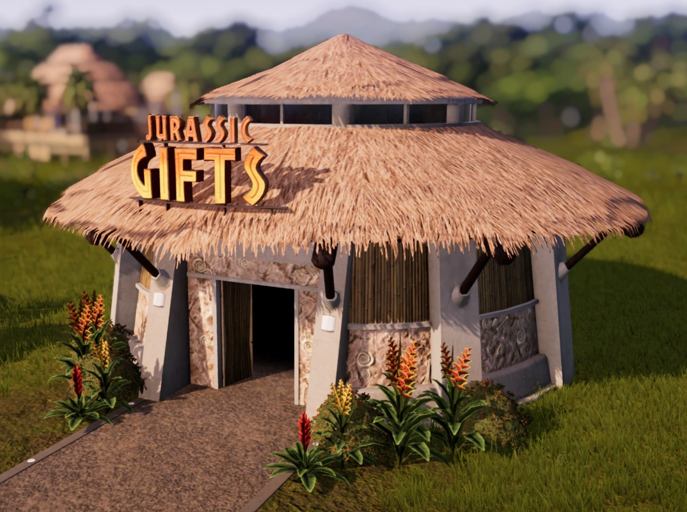Jurassic Falls
En varias ubicaciones del parque encontrarás máquinas expendedoras de bebidas y golosinas con temática de dinosaurios. Desde refrescos y agua embotellada hasta snacks saludables y golosinas, nuestras máquinas ofrecen algo para todos. Además, algunas máquinas expendedoras cuentan con juegos interactivos que entretendrán a los más pequeños mientras seleccionan su snack.
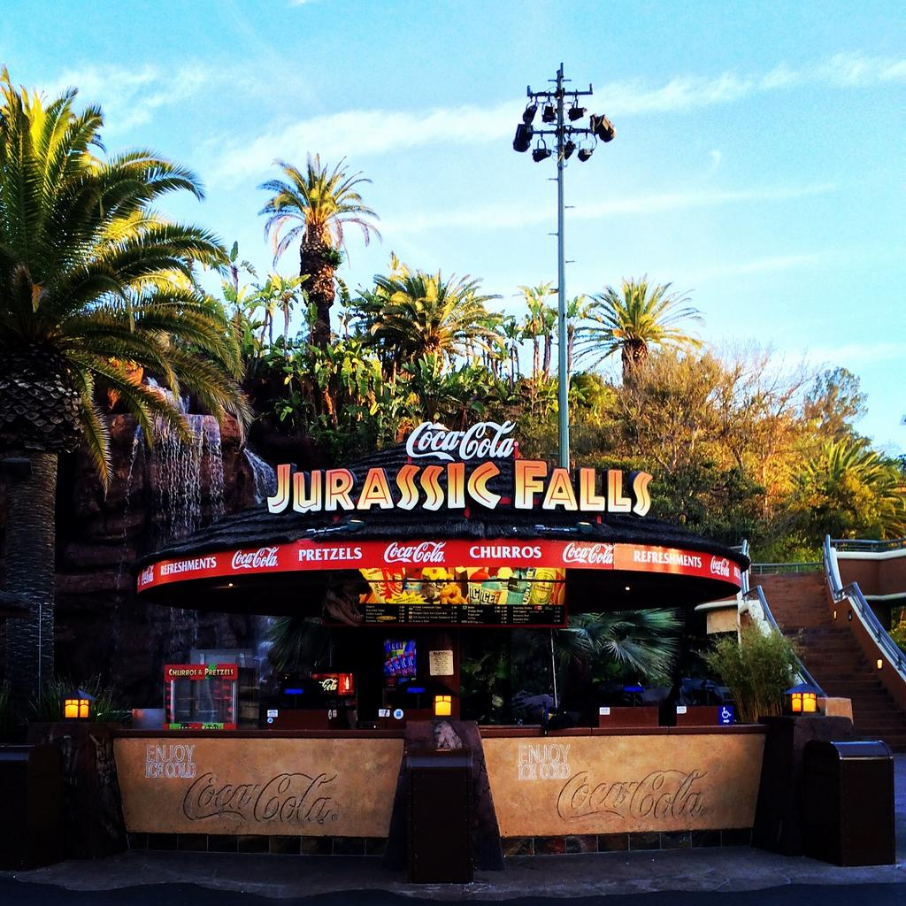Sanitarios
Jurassic Park cuenta con modernos y amplios baños situados estratégicamente en diferentes zonas del parque. Cada instalación está equipada con tecnología avanzada y comodidades para garantizar la higiene y comodidad de todos nuestros visitantes. También disponemos de baños familiares y accesibles para personas con discapacidad.
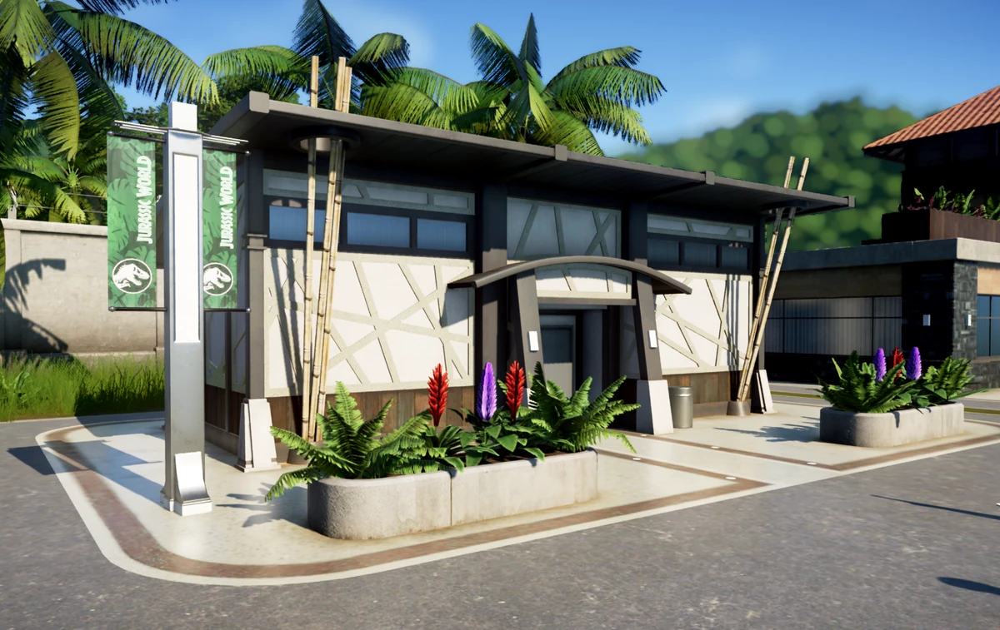Otros Servicios
Además de lo mencionado, contamos con:
- Zonas de descanso: Áreas sombreadas con bancos y mesas para que puedas relajarte.
- Centro de primeros auxilios: Personal médico capacitado está disponible para cualquier emergencia.
- Puntos de información: Personal amable y bien informado está disponible para responder a cualquier pregunta y ayudarte a planificar tu día.
Consejos de Viaje:
- Reserva tus entradas con antelación para garantizar tu visita.
- Usa ropa cómoda y calzado adecuado para caminar.
- No olvides tu cámara para capturar momentos inolvidables.
Contacto y Reservas:
Para más información y reservas, visita nuestro sitio web oficial o contacta a nuestro equipo de atención al
cliente.
Cómo Llegar:
Jurassic Park San Diego es fácilmente accesible en coche y transporte público.
El parque dispone de amplias instalaciones de estacionamiento y está bien conectado con las
principales rutas de transporte de la ciudad.
Ven y vive una aventura que desafía la imaginación en Jurassic Park San Diego, donde el pasado cobra vida en un entorno seguro y educativo, ofreciendo una experiencia única para visitantes de todas las edades.
Seguridad en Jurassic Park San Diego
En Jurassic Park San Diego, la seguridad es una prioridad absoluta tanto para los visitantes como para los dinosaurios que habitan el parque. Desde su creación, InGen ha implementado una serie de medidas de seguridad avanzadas para garantizar una experiencia segura y educativa para todos los visitantes, así como para proporcionar un ambiente controlado y saludable para los dinosaurios clonados.
Para los visitantes, Jurassic Park está equipado con una infraestructura robusta y sistemas de monitoreo de última generación. Las alambradas electrificadas aseguran que los dinosaurios permanezcan dentro de sus hábitats designados, minimizando cualquier riesgo de escape. Además, el parque cuenta con bunkers de emergencia estratégicamente ubicados.
Para los dinosaurios, el bienestar es igualmente crucial. Los hábitats están diseñados para replicar sus entornos naturales lo más fielmente posible, y se utilizan dispositivos de sonido y olor para mantenerlos tranquilos y alejados de áreas restringidas. Los expertos en comportamiento animal, veterinarios y genetistas de InGen trabajan incansablemente para asegurar que cada dinosaurio reciba el cuidado adecuado, incluyendo alimentación especializada, atención médica y espacio suficiente para moverse libremente.
Alambradas Electrificadas
En Jurassic Park contamos con alambradas electrificadas de tres niveles de seguridad:
- Baja Seguridad: Utilizadas para separar áreas menos peligrosas.
- Media Seguridad: Utilizadas para zonas con dinosaurios medianamente peligrosos.
- Alta Seguridad: Utilizadas para los dinosaurios más peligrosos.
Estacion de Ranger
Contamos con una estación de rangers equipada con el armamento y equipo necesario para manejar cualquier situación de emergencia. Los rangers están siempre listos para actuar y garantizar la seguridad del parque.
Para proteger a nuestros visitantes y personal, disponemos de una armería equipada con:
- Rifles Tranquilizadores: Para sedar a los dinosaurios en situaciones de emergencia.
- Armas de Fuego: Utilizadas solo en casos extremos para protección.
- Municiones Especializadas: Diseñadas específicamente para incapacitar a dinosaurios sin causarles daño permanente.
Dispositivos de Seguridad
Nuestro parque está monitoreado constantemente por un sistema de cámaras de seguridad de alta definición que cubren todas las áreas, asegurando una vigilancia constante y una respuesta rápida a cualquier incidente. Además de las cámaras, utilizamos una variedad de dispositivos de seguridad como sensores de movimiento, alarmas y sistemas de comunicación avanzada para mantener un entorno seguro y controlado.

Protocolos de Emergencia
Hemos establecido protocolos de emergencia bien definidos y entrenamos regularmente a nuestro personal para manejar cualquier situación, garantizando una evacuación rápida y segura si es necesario.
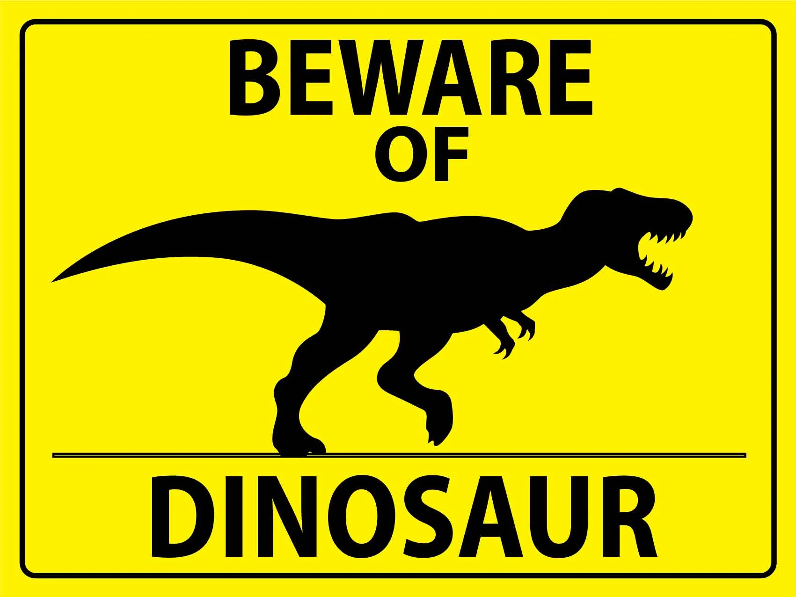Estas medidas garantizan no solo la protección de los visitantes, sino también la preservación y el cuidado de los dinosaurios, creando un equilibrio entre la emoción de la aventura y la responsabilidad de la seguridad. Jurassic Park combina tecnología de punta, planificación meticulosa y un equipo dedicado para ofrecer una experiencia inolvidable y segura, donde los visitantes pueden maravillarse con los dinosaurios mientras se asegura el bienestar de estas majestuosas criaturas.
Atracciones en Jurassic Park San Diego
En Jurassic Park San Diego, ofrecemos emocionantes atracciones para que vivas la experiencia de los dinosaurios de una manera única e inolvidable. Aquí te presentamos dos de nuestras atracciones más destacadas.
Coliseo Central
El Coliseo Central es una impresionante estructura donde podrás presenciar espectáculos y demostraciones en vivo con algunos de los dinosaurios más fascinantes del parque. Diseñado para ofrecer una vista segura y emocionante, el coliseo tiene capacidad para miles de visitantes y garantiza una experiencia inolvidable.
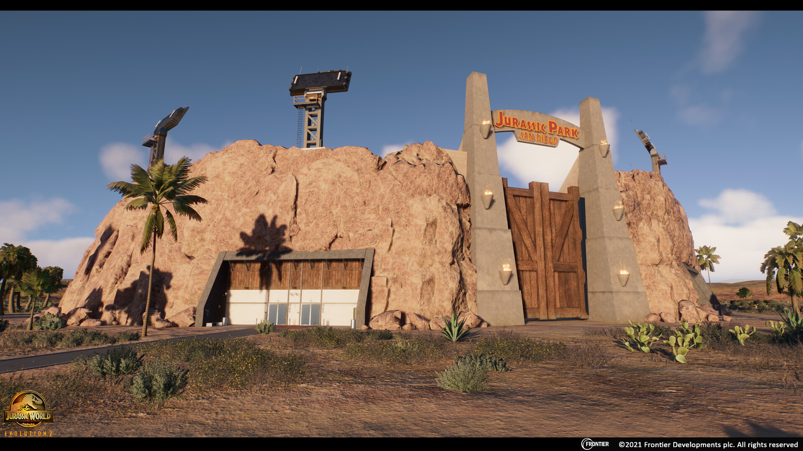Miradores
Nuestros miradores están estratégicamente ubicados para ofrecer vistas panorámicas de los hábitats de los dinosaurios. Desde estos puntos elevados, podrás observar a los dinosaurios en su entorno natural, brindando una perspectiva única y segura. Equipados con telescopios y paneles informativos, los miradores son una parada obligada para cualquier visitante del parque.
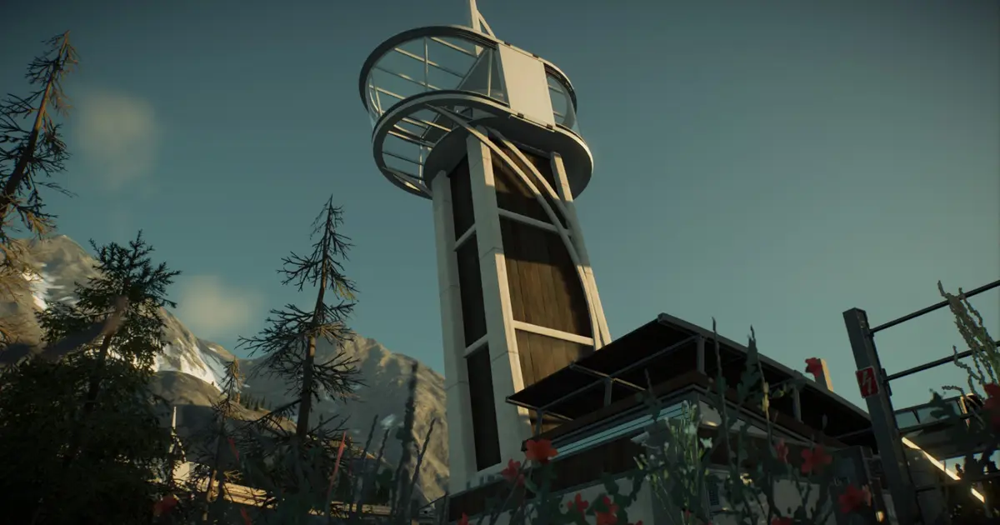Dinosaurios
Descubre algunos de los dinosaurios más fascinantes que habitaron la Tierra hace millones de años. En Jurassic Park San Diego, podrás conocer de cerca a estas increíbles criaturas y aprender más sobre su historia.
Herbivoros
Contamos con 5 especies de herbívoros:
Pachycephalosaurus
El Pachycephalosaurus, conocido por su grueso cráneo en forma de cúpula, vivió durante el Cretácico tardío hace unos 70 millones de años. Se cree que usaba su cráneo en combates de exhibición y defensa.
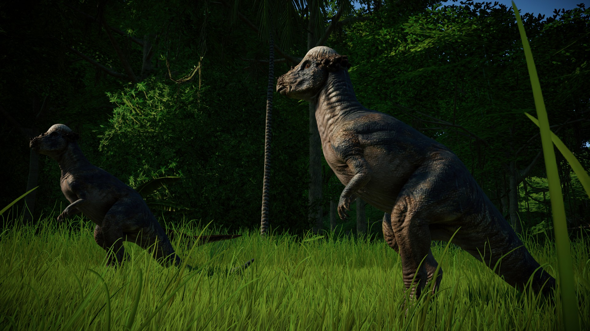Parasaurolophus
El Parasaurolophus, con su distintiva cresta en la cabeza, vivió durante el período Cretácico tardío hace unos 76 millones de años. Esta cresta probablemente se utilizaba para la comunicación y como dispositivo de resonancia sonora.
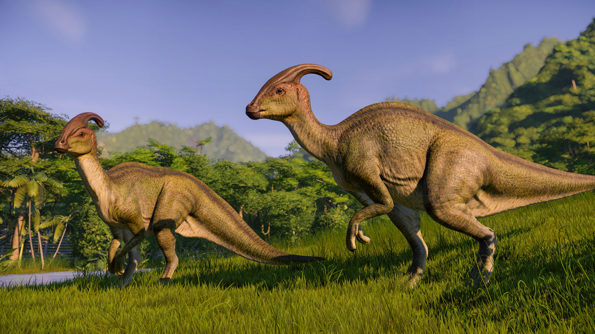Stegosaurus
El Stegosaurus, famoso por sus placas óseas en el lomo y cola, vivió durante el período Jurásico tardío hace aproximadamente 150 millones de años. Estas placas podrían haber servido para la defensa, la regulación térmica o exhibición.
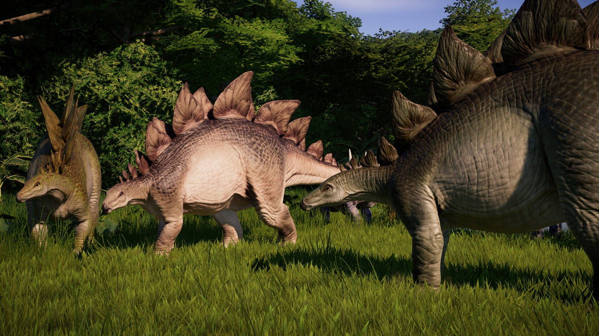Triceratops
El Triceratops, conocido por sus tres cuernos y gran collar óseo, vivió durante el período Cretácico tardío hace unos 68 millones de años. Era un dinosaurio herbívoro que probablemente utilizaba sus cuernos para la defensa y el combate entre machos.

Mamenchisaurus
El Mamenchisaurus, conocido por su extremadamente largo cuello, vivió durante el período Jurásico tardío hace unos 160 millones de años. Era un herbívoro que probablemente se alimentaba de la vegetación de las copas de los árboles.
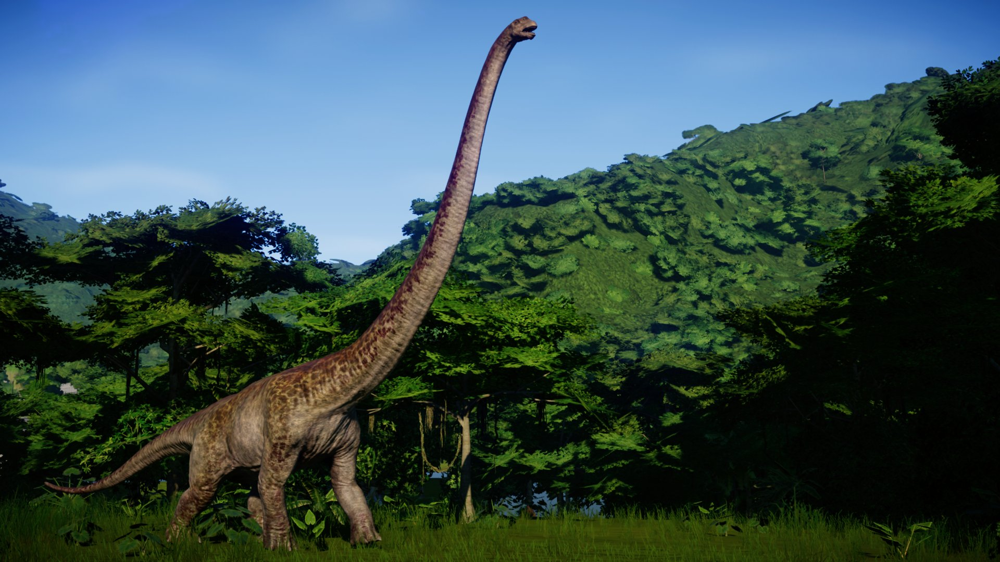Carnivoros
Contamos con 3 especies de carnívoros:
Compsognathus
El Compsognathus vivió durante el período Jurásico tardío, hace aproximadamente 150 millones de años. Este pequeño dinosaurio carnívoro es conocido por su velocidad y agilidad.
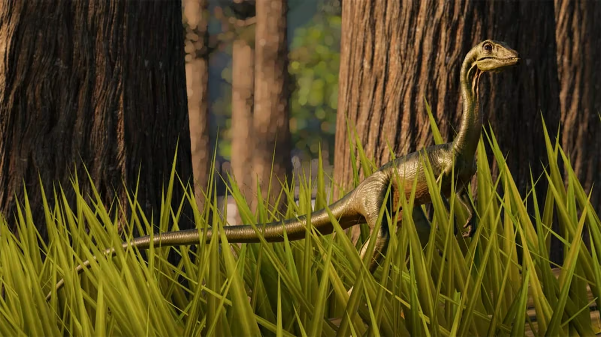Gallimimus
El Gallimimus, que vivió durante el período Cretácico tardío hace unos 70 millones de años, aunque se cree que era omnívoro, a menudo se le clasifica como carnívoro por su dieta ocasional de pequeños animales. que se destacaba por su velocidad y apariencia similar a la de un avestruz.
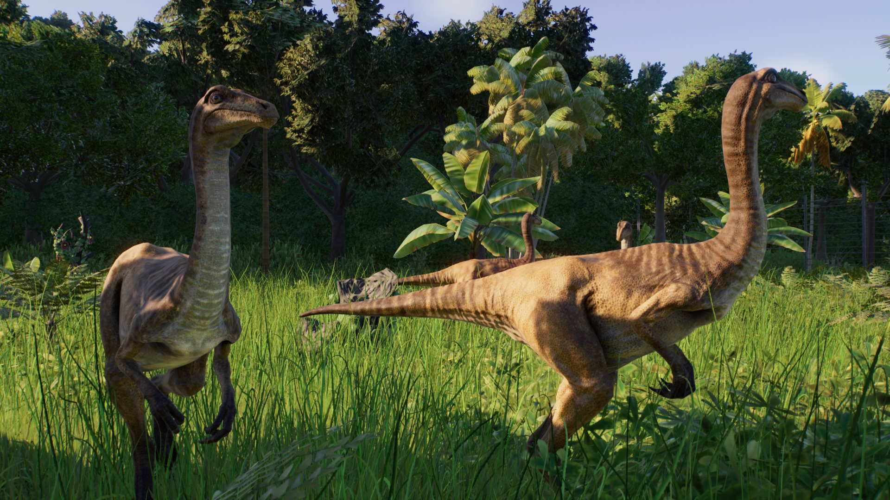Tyrannosaurus Rex
El Tyrannosaurus Rex, uno de los depredadores más famosos y temidos, vivió durante el período Cretácico tardío hace unos 68 millones de años. Con su potente mandíbula y afilados dientes, era un cazador formidable.
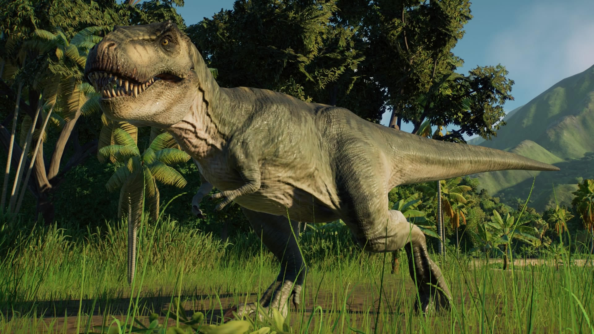